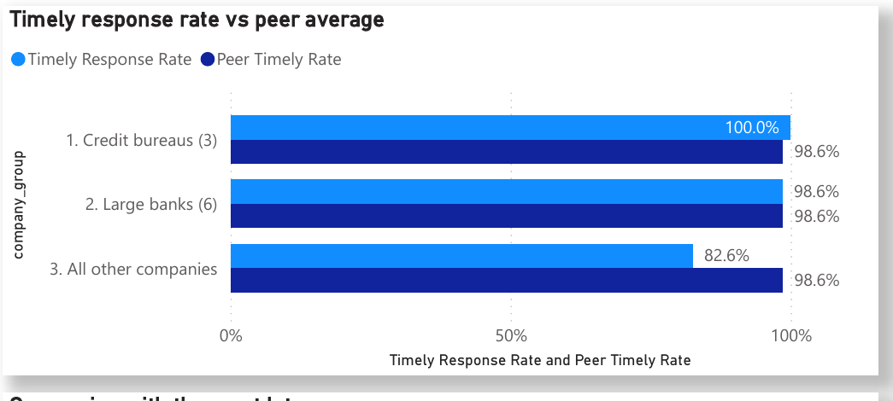
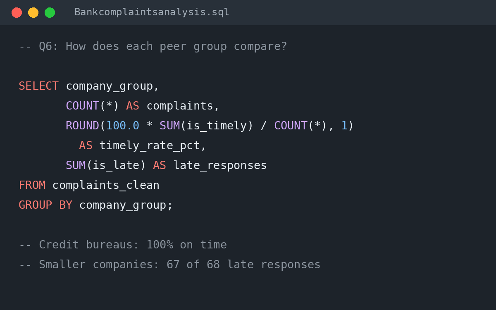

The Business Problem
When the CFPB forwards a complaint, the company is expected to respond within 15 days. That deadline works like a service level agreement (SLA): a late response is a regulatory risk, and a complaint that ends in relief, where the company fixes something or pays money back, points to a process error.
The project brief defined four stakeholders and what each needs: the Head of Operations (what to fix first), complaints team leads (where the SLA is missed), Compliance (performance against peers) and product owners (the root causes behind their products’ complaints).
These needs became nine business questions and four KPIs: complaints, timely response rate, late responses and relief rate.
View Brief
The Dashboard for Stakeholders

Four pages, each answering one question: the executive summary (how are we performing?), root cause (what drives complaints?), peer comparison (how do company groups compare?) and recommendations with caveats (what should we do?).
Every chart title states its finding rather than describing the chart, and filters let a manager focus on one company group or product.
View Dashboard
Key Findings
- Credit reporting drives the volume. 92.5% of the 4,991 complaints concern credit reporting, and “incorrect information on your report” alone accounts for 58%.Implication: improving one product would address most of the complaint volume.
- The main root cause is data matching, not service. In 36% of all complaints, the consumer says the information on their report belongs to someone else.Implication: the fix sits upstream, in how lenders and bureaus match identities, not in faster complaint handling.
- The SLA is largely met. 98.6% of complaints were answered within 15 days. The credit bureaus achieved 100%, and the large banks matched the 98.6% average.Implication: there is no case for a broad SLA intervention.
- Late responses are concentrated in smaller companies. With 7.7% of complaints, they caused 67 of the 68 late responses, mostly in debt collection and student loans.Implication: SLA monitoring should target these products rather than every product.
- Legal threats are an SLA hot spot. Complaints about threatened legal action were answered late in 14 of 26 cases (54%), against 1.4% overall.Implication: these high-risk complaints need a dedicated route.
Recommendations
- Fix identity matching at the source. Work with lenders and credit bureaus to stop information being reported on the wrong person.Addresses finding 2 · Measure: share of complaints citing information that belongs to someone else.
- Monitor the SLA where it fails. Track debt collection and student loan complaints daily.Addresses finding 4 · Measure: timely response rate for these two products.
- Create a specialist route for legal threats. Send these complaints to a specialist team with a 10-day internal target.Addresses finding 5 · Measure: late responses in this category.
- Use relief as an early warning. Review monthly the issues where companies most often had to provide relief (42.6% of closed complaints).Surfaces process errors · Measure: relief rate by issue.
- Confirm with more data before setting targets. Re-run the analysis on two to three years of data for a bank peer group.Addresses the snapshot limitation · Measure: consistency of findings across periods.
View repository
How the Analysis Was Done

The analysis was built in SQLite using DBeaver. The first step creates one clean table: it converts the CFPB dates, assigns each company to a peer group (credit bureaus, large banks and all other companies) and adds 1/0 flags for timely response, late response and relief. Every KPI is then a simple SUM or COUNT, which keeps the numbers easy to check.
Nine business questions follow, from a data check and baseline KPIs to root cause, peer comparison and the companies missing the SLA. Each query carries a comment stating the business question and the result.
View SQL
Comparing Fairly
The CFPB states that its complaint data is not a statistical sample, and that volume should be read in the context of company size: a large company will always receive more complaints than a small one.
I therefore grouped companies into peers and compared rates, not counts. This changed the conclusion. By count, the credit bureaus dominate; by rate, the smallest group, with 7.7% of complaints, caused 67 of the 68 late responses.
Limitation: the extract is a snapshot, with 95% of complaints received between 24 and 29 August 2026. It shows where problems sit today, not how they trend.